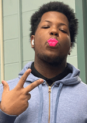

Jeremiah Anderson's Portfolio for Aeng 110 Class |
||
| Home Photo Project Video Project Print Project Info Project | ||
|
 Student at Millersville University |
Hello, my name is Jeremiah Anderson and this is my website. During my time at Millersville University, I have been actively involved in a range of academic, professional, and community-building initiatives that have helped shape both my educational experience and personal growth. As a student in the Applied Engineering program, I have taken part in various research projects and coursework that reflect my passion for General Technology. Beyond academics, I have contributed to campus life through my involvement in Millersville Catering where I held leadership roles such as Lead Worker. These roles allowed me to collaborate with peers, organize events, and promote inclusive and engaging activities for the campus community. |
|
|
©: 2025 Jeremiah Anderson | ||